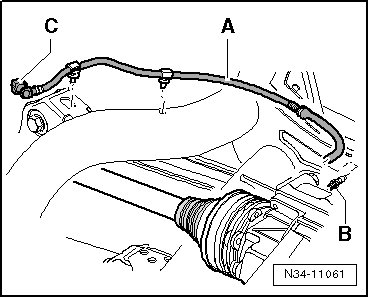
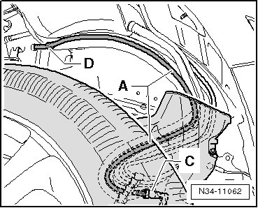

Rear Final Drive
Breather Line Routing
The breather line consists of 2 parts.
Part 1 of the breather line - A - runs from the breather connection - B - of the rear final drive over the subframe to connection - C -.

Part 1 of the breather line - A - is locked by the connection - C - to part 2.

Part 2 of the breather line - A - is clipped under the fuel filler tube (- D -).
For removal and installation of the breather line, refer to --> [ Breather Line ] Breather Line.